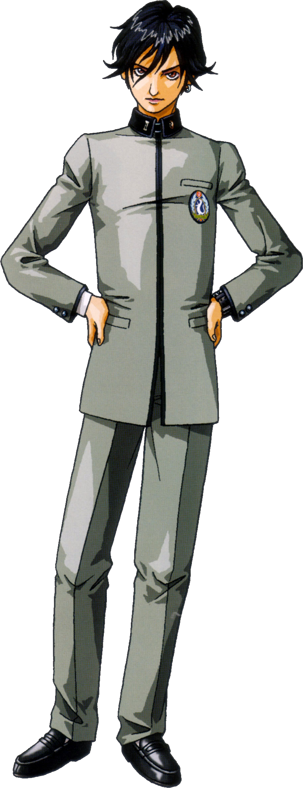
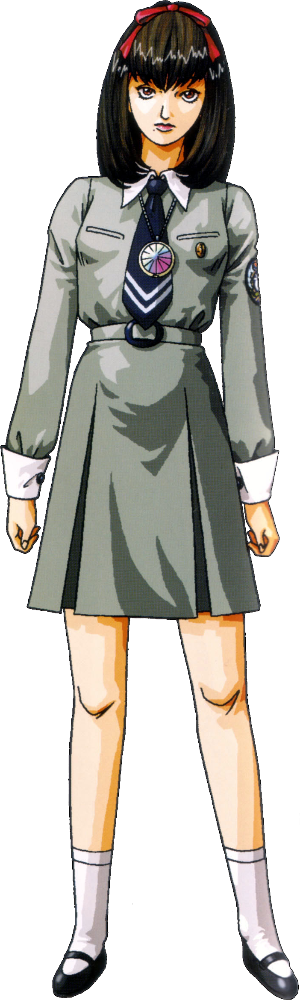
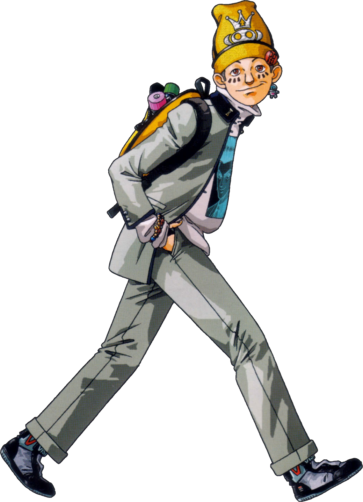
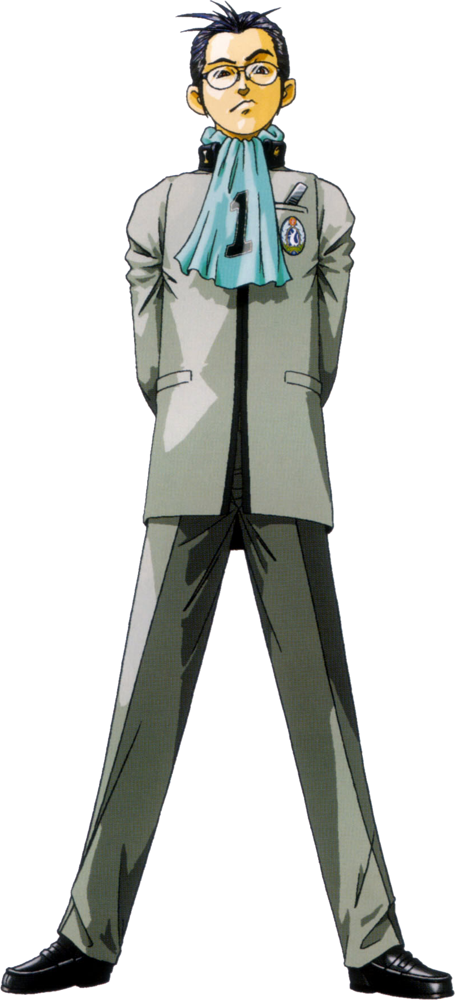
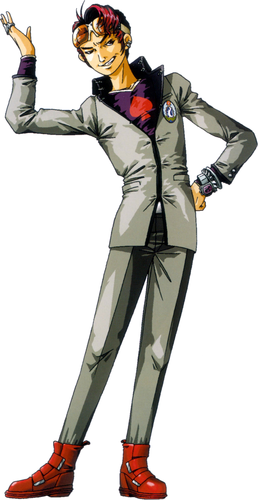
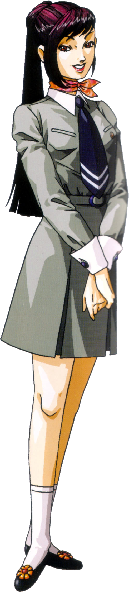
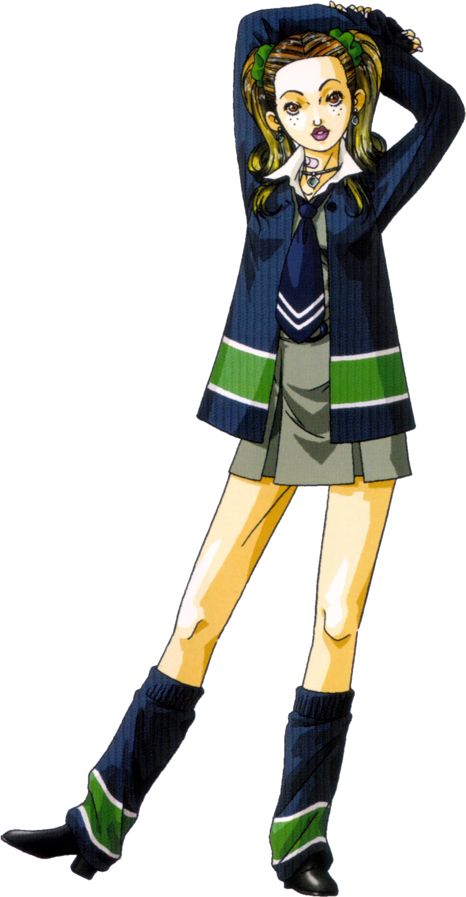
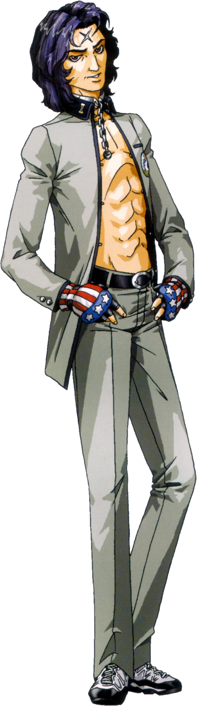
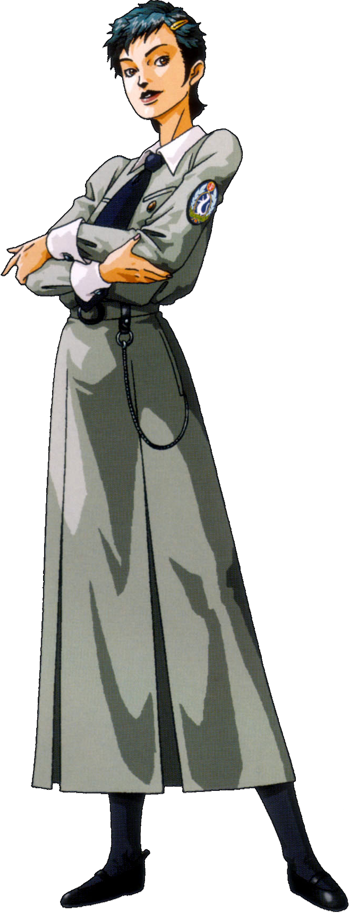

| Revelations: Persona | |
|---|---|

|
|
| Nome original: | 女神異聞録ペルソナ |
| Ano de lançamento: | 1996 no Japão e no Ocidente |
| Plataforma(s): | PlayStation, Windows e PlayStation Portable |
Revelations: Persona
Revelations: Persona (Megami Ibunroku Persona, no Japão) é o primeiro jogo da série Persona, inicialmente um spin-off da franquia Shin Megami Tensei desenvolvida pela Atlus.
A Atlus lançou um remake para o PlayStation Portable, intitulado Shin Megami Tensei: Persona (apenas Persona no Japão).
A primeira localização americana, Revelations: Persona, alterou vários nomes e aparência de personagens e locais, assim como removeu completamente uma rota da história. Essas alterações foram revertidas no remake.
| Contents |
|---|
1. Plot
Ambientado em 1996, Persona gira em torno do protagonista e seus colegas de classe na St. Hermelin High School em Mikage-cho (Lunarvale em Revelations: Persona). Hidehiko Uesugi convence todos os seus amigos a participar de uma brincadeira chamada "Persona", que é feita de forma muito parecida com o brincadeira ritualística "Maria Sangrenta". Durante o jogo, os alunos perdem a consciência e encontram Philemon, que lhes dá a capacidade de invocar reflexos de suas personalidades, conhecidas como Personas.
Pouco tempo depois, o protagonista e vários de seus amigos vão visitar Maki Sonomura, que está doente e de cama. Durante a visita, eles descobrem que a cidade está estranha e que demônios estão vagando pelas ruas. O grupo é informada pela mãe de Maki, engenheira da SEBEC, que o culpado pelo incidente é Takahisa Kandori, presidente da empresa.
Depois de levar a mãe de Maki para a escola (o único lugar da cidade que não está infestado de demônios), as ações do protagonista decidem o curso da história. Se o protagonista optar por ir atrás de Kandori, ele dará início ao Capítulo SEBEC, que é o enredo principal do jogo. Alternativamente, o protagonista pode optar por investigar uma série de incidentes que ocorreram na escola há oito anos e iniciar a Snow Queen Quest, um enredo alternativo não relacionado ao incidente de SEBEC.
2. Personagens








